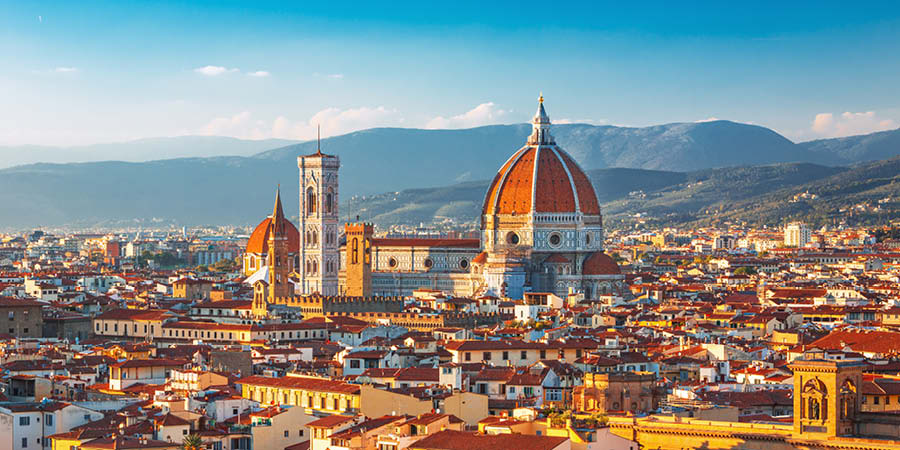
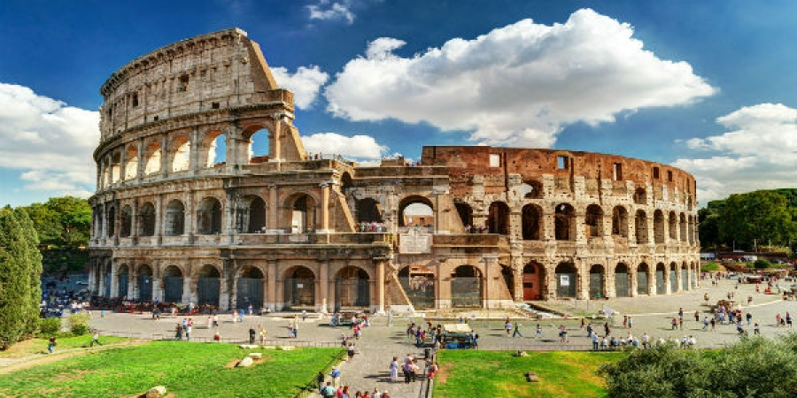

Italy is a boot-shaped peninsula that juts out of southern Europe into the Adriatic Sea, Tyrrhenian Sea, Mediterranean Sea, and other waters. Its location has played an important role in its history.
The sea surrounds Italy, and mountains crisscross the interior, dividing it into regions. The Alps cut across the top of the country and are streaked with long, thin glacial lakes. From the western end of the Alps, the Apennines mountains stretch south down the entire peninsula.
West of the Apennines are wooded hills that are home to many of Italy's historic cities, including Rome. In the south are hot, dry coastlands and fertile plains where olives, almonds, and figs are grown.

When to go
The best time to visit Italy is during spring (March-May) and autumn (September-November), when the temperatures are comfortable and there are fewer crowds.
Wildflowers in early April and rising temperatures through to the end of June are a real draw. From October, the summer heat eases off, the grape harvest is in full swing, and the cities are quieter for sightseeing.
Temperatures in the south remain mild in winter. While it is the off-season and some attractions have limited opening hours, it's still an enjoyable time to explore many of the country's historical sites. Winters in northern Italy, however, are normally wet and cold.
The summer months of July and August see higher temperatures and visitor numbers reach their peak. Prices are also higher.

Culture and customs
Italy boasts a cultural heritage of immense significance, encompassing a diverse range of artistic, culinary, and historical contributions that have left an indelible mark on the world. The birthplace of the Renaissance, Italy stands as a crucible of artistic genius, nurturing luminaries like Leonardo da Vinci, Michelangelo, and Raphael, whose masterpieces continue to captivate audiences globally. The country's architectural marvels, including the Colosseum and the Leaning Tower of Pisa, stand as testaments to Italy's enduring influence on structural design.
Italian cuisine, celebrated for its emphasis on fresh, quality ingredients, offers a culinary journey through classics like pasta, pizza, and exquisite regional specialties. In the realm of music, Italy's legacy is profound, birthing maestros like Giuseppe Verdi and Antonio Vivaldi, with opera reigning as a cherished cultural tradition. The Italian language, noted for its musicality, has shaped literature, with Dante Alighieri's "Divine Comedy" standing as a pinnacle of literary achievement.
Festivals such as Venetian Carnivale and Siena's Palio exemplify Italy's vibrant cultural calendar, while family values form the bedrock of social life, fostering close-knit communities. Italy's influence extends to the fashion world, with luxury brands like Gucci and Prada setting global trends, and Milan emerging as a crucible of innovative design. In summation, Italy's culture weaves a tapestry of history, art, cuisine, and tradition that continues to inspire and enchant people worldwide.